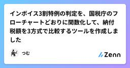
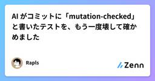
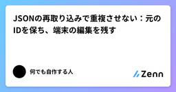
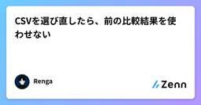
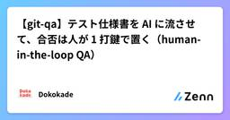
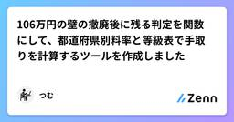
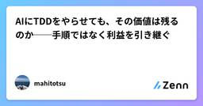
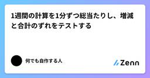
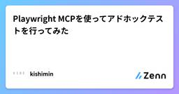
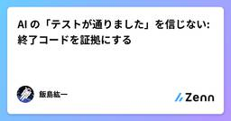

Zennの「Test」のフィード
フィード

インボイス3割特例の判定を、国税庁のフローチャートどおりに関数化して、納付税額を3方式で比較するツールを作成しました
Zennの「Test」のフィード
はじめにインボイス制度を機に課税事業者になった個人事業者向けの特例が、2026年度の税制改正で変わります。令和8年分(2027年3月の申告)が2割特例の最後の年で、令和9年分・令和10年分は、新設された3割特例の対象です。「この特例は使えるのか」「一般課税や簡易課税と納付税額がどう違うのか」を、ひと目で比べられる計算ツールを作りました。ツール: https://seidolab.com/tools/invoice-3wari/フロントエンドだけの静的サイトで、入力した内容はブラウザの中だけで計算し、送信しません。この記事では、制度の要点と、判定を関数にした過程、端数処理の...
7時間前

AI がコミットに「mutation-checked」と書いたテストを、もう一度壊して確かめました
Zennの「Test」のフィード
AI にコードを直してもらうと、テストも一緒に書いてくれます。そのテストが本当に効いているかは、テストが通ったことからは分かりません。直した行を壊しても通るテストは、何も見張っていないからです。自作の WordPress プラグイン PDF Image Creator の 1.4.33 で、Claude はコミットメッセージの最後にこう書きました。- Dead code removed; translations (263); tests for each fix, mutation-checked.直したところごとにテストを足し、それを mutation で確かめた、という意味で...
14時間前
複数端末Pushの移行は、旧版のログアウトが残る間は終わらない
Zennの「Test」のフィード
サーバーで一人に複数のPush Tokenを保存できるようにしても、旧版アプリのログアウトが全端末解除を呼べば、ほかの端末の登録も消えます。APIの新しい動作だけでは、移行後の利用状態を説明できません。SquadNoteの複数端末対応を、変更前後のAPIと旧版・新版の解除方法を組み合わせて確認しました。この記事の焦点は、登録や解除の実装方法そのものではなく、どの組み合わせまで残り得るかと、移行の完了条件です。対象はcircle-hubの0cda1e8と、変更コミットad0a669の親です。2026年9月11日にローカルでテストしました。OTA配布や実端末への通知送信は行っていません。...
14時間前
AIが書いたRailsのどこを読むか - 不変条件とミューテーションテストでレビューを絞る
Zennの「Test」のフィード
AIエージェントにRailsの実装とRSpecを任せると、読み切れない量のコードが届きます。人間が設計で契約を表にまとめ、evilutionによるミューテーションテストとCRAP値でテストの強さを機械的に検証すると、レビューで読む場所を、契約の表と、検証ツールが指摘した箇所に絞れます。その手順を、動くRailsアプリと実測した件数で1歩ずつ説明する本です。
17時間前

JSONの再取り込みで重複させない：元のIDを保ち、端末の編集を残す
Zennの「Test」のフィード
「場所メモ」は、行きたい場所の候補と訪問履歴を残す、自分用のWebアプリです。現在は開発中で、本番には未公開です。整理した記録をJSONファイルから取り込む機能を追加しました。同じファイルをもう一度選んでも記録を増やさず、取り込み後に端末で直した内容も残すようにしています。今回は、整理済みJSONを追加する処理の実装とテストを紹介します。クラウド同期の版番号ではなく、ファイル内の1件ずつをどう扱うかが題材です。 同じ訪問と、別の日の再訪を分けるたとえば、取り込み元に次の2件があるとします。説明用に項目を省略しています。[ { "id": "source-1", "labe...
18時間前
本番DBに不要なレコードを数千万件登録してしまった話 1
1
Zennの「Test」のフィード
ある日、普段数分以内で完了するはずのバッチジョブからレイテンシーアラートが上がってきました。調査すると、出荷明細の補足情報を登録する処理で、大量のINSERTが発生しています。このままでは、他の入出荷等にも影響を及ぼすため、早急な解消が必要な状況です。この記事では、無駄に増殖してしまったデータとの戦いについてご紹介します。 何が起きていたのか問題のINSERTが発生している箇所を調査したところ、出荷の明細に紐づく補足情報を保持するテーブルに対して大量のINSERTが行われていました。本来は、1出荷明細に対して多くても数十レコードです。一体何故？※補足です。アラートの...
1日前

CSVを選び直したら、前の比較結果を使わせない
Zennの「Test」のフィード
CSVを2つ選び、キーと列の対応を決めて差分を見る。比較が終わったあとで片方のCSVを選び直したら、さっきの結果はいつ消えるべきでしょうか。新しい比較が終わるまで残すと、画面のファイル名は新しく、差分は古いという状態になります。その間に保存ボタンを押せば、別の入力から作った結果を持ち出せます。ブラウザー内でCSVを比較する非公開試作では、ファイルや比較設定の変更と同時に旧結果を無効にし、遅い応答で復活しないようにしました。この記事は、その実装と保存済みの試験記録から結果の寿命を整理したものです。この試作はプレビュー、比較、HTMLレポート生成をWorkerで行い、画面側のcontr...
2日前
Godot 4の--write-movieで、プレイ画面を音つきで自動録画する
Zennの「Test」のフィード
TL;DR撮影スクリプトで動かしたゲームを、Godot 4.6.1の--write-movieで音つきのmp4にしました。godot --write-movie out.avi --fixed-fps 60 --disable-vsync --script tools/capture_clip.gdffmpeg -i out.avi -vf fps=30 -c:v libx264 -pix_fmt yuv420p -crf 20 -c:a aac -b:a 160k out.mp4手元のMac（Apple Silicon）で試した結果です。11.3秒の場面が、起動から終了...
2日前

【git-qa】テスト仕様書を AI に流させて、合否は人が 1 打鍵で置く（human-in-the-loop QA）
Zennの「Test」のフィード
AI に「全部通りました」と言わせたくないAI でテストを自動化すると、最後に AI が「全部通りました」と言います。でも、出したものが壊れていたとき責任を持つのは人です。「AI が通したので」は通りません。git-qa は、その前提のまま作った 人が判定する QA ランナー（human-in-the-loop QA・オープンソース）です。AI がテスト仕様書（検証シート）を流す —— 端末・ブラウザ・デスクトップアプリを操作する人はライブ映像を見て、1 ケースずつ 1 打鍵で合否を置く誰が何を確かめたかが証跡に残る 「誰が確認したか」が残る結果の語は 5 ...
2日前

106万円の壁の撤廃後に残る判定を関数にして、都道府県別料率と等級表で手取りを計算するツールを作成しました
Zennの「Test」のフィード
はじめに2026年10月1日に、パートやアルバイトが社会保険に加入する条件のうち、賃金要件(月8.8万円以上)が撤廃されました。「自分は社会保険に入るのか」「入ると手取りはいくら変わるのか」を確認できる計算ツールを作りました。ツール: https://seidolab.com/tools/shaho-106/フロントエンドだけの静的サイトで、入力した内容はブラウザの中だけで計算し、送信しません。この記事では、制度の要点と、判定フローの組み方、数字の落とし穴、競合を調べて決めた方針をまとめます。 何が変わったのか厚生労働省と日本年金機構の資料によると、撤廃されたのは賃...
3日前
iOSのTestFlightによる課金のテストでの課金取消方法
Zennの「Test」のフィード
XcodeのStoreKit Testingを使うと、開発環境で購入状態を変えながらテストできます。一方、TestFlightでの課金テストには、アカウントの切り替えや購入履歴の反映など、はまりどころがあります。消費型アイテムは繰り返し購入できますが、非消費型アイテムの初回購入や、サブスクリプションの新規購入を再現したいときは、購入履歴を消去してテストし直すことがあります。その際のポイントをまとめます。 事前準備App Store Connectの「ユーザとアクセス」→「Sandbox」で、テスト用アカウントを作成しておきます。 ポイント 1. 普段のApple Acco...
3日前

AIにTDDをやらせても、その価値は残るのか──手順ではなく利益を引き継ぐ
Zennの「Test」のフィード
AIにTDDをやらせると、何が起こりうるかAIに、ユーザーを無効化する機能を作らせるとします。人間が書いて承認した受け入れ条件は、次の三つです。無効化されたユーザーは、新たにログインできない無効化されたユーザーの既存のセッションは、失効する無効化されていないユーザーのセッションには、影響しないTDDに倣って、AIにテストを先に書かせ、それを通す実装を書かせます。手順は、人間が書いていたときと同じです。こんな流れを想像してみてください。AIは、1と2を実装してテストを通します。ところが2の実装で、無効化したユーザーだけでなく、すべてのユーザーのセッションを失効させてしま...
3日前

1週間の計算を1分ずつ総当たりし、増減と合計のずれをテストする
Zennの「Test」のフィード
AI利用枠シミュレーターは、利用枠が回復する時刻を動かして、1週間に使う量を比較する自作Webアプリです。公開済みで、日付と時刻、スライダーから条件を指定できます。このアプリは、決めた使い方をもとに計算する試算ツールです。実サービスの利用枠を取得する機能はなく、各社の回復仕様を保証するものでもありません。計算モデルを変更したとき、代表的な時刻だけをテストするのではなく、スライダーの全位置を調べました。1週間を1分単位にすると10,080通りです。この規模なら、すべて計算してもテストは短時間で終わります。 何を計算しているか比較する期間は、入力した週間リセット日時までの7日間です...
3日前
PoCで終わらせない最適化
Zennの「Test」のフィード
PoCで動いた最適化モデルを、本番システムとして動かし続けるための本です。100行のシフト最適化PoCを題材に、モデルのテスト設計、入力データのバリデーションなど、求解だけで終わらせず現場で使い続けられるシステムへ育てます。
3日前

Playwright MCPを使ってアドホックテストを行ってみた
Zennの「Test」のフィード
なぜ調べたかPlaywright MCPとCodexを使って、アドホックテストを行ってみたかったため。 学んだこと Playwright MCPとはPlaywright MCPは、AIエージェントがブラウザを操作するためのMCPサーバーです。ページのアクセシビリティ情報を利用して、画面遷移やクリック、フォームへの入力などを行えます。今回はCodexと組み合わせて、アドホックテストを実施しました。 Playwright MCPの導入方法CodexでPlaywright MCPを利用できるようにします。前提として、Node.jsとCodexが必要です。以下のコマ...
3日前
「いま押せるボタン」を、状態から推し量らない
Zennの「Test」のフィード
定例作業をチャットBotで案内しています。担当者がスレッドに出たボタンを順に押し、Botが次の操作を案内する流れです。ここでは、このボタン付きメッセージを「操作盤」と呼びます。ところが、再投稿したときの案内は、こんな言い方のままでした。このスレッドに操作用のボタンが残っている場合は、先にそちらで終わらせてください。Bot自身が出したボタンなのに、名前を言えない。毎日のリマインドでも押すものを名指しできず、担当者がスレッドを遡って確認する必要がありました。この記事は、ボタン付きメッセージを投稿・更新するBotを保守し、案内文と表示のずれに困っている人に向けて書きます。Pytho...
3日前
AIが生成したテストコードを、レビューでどう扱うか
Zennの「Test」のフィード
LLM にテストコードを書かせると、プルリクエストには緑のチェックが並んだ状態で届きます。テストが全部通っているので、レビューする側もつい「テストもあるし大丈夫そう」と承認したくなります。ところが、通っているテストが何を守っているのかは、緑のチェックからは分かりません。Qiita や Zenn は、AI が生成した内容を人が確かめてから公開することを求めています。テストコードも同じで、AI が書いたものは、人が中身を確かめてから取り込みたいものです。この記事では、AI が生成したテストコードをレビューするときに見落としやすいパターンを、架空の小さな例で実際に動かしながら整理します。確...
4日前
CLAUDE.md の「無料版を体験版にしない」をテストに移しました。それでも、画面の置き場所が門になっていました
Zennの「Test」のフィード
AI と一緒にコードを書いていると、守ってほしい方針を CLAUDE.md に書いておくことになります。書いておけば、毎回読んでくれる。ただ、読んでくれることと、守られていることは別です。自作の WordPress プラグインのうち、AI Chatbot と PDF Image Creator には、無料版と、追加で買う Pro 版があります。どちらにも共通の方針が1つあります。無料版を、有料版を売るための体験版にしない。無料版でできていたことを Pro 版に移さないし、無料版の既定値を下げて Pro 版を良く見せることもしない。この方針を、PDF Image Creator ではテ...
4日前

厚生年金の標準報酬月額の上限引き上げ(2027〜2029年)の保険料を、時点別の等級表とテストで計算するツールを作成しました
Zennの「Test」のフィード
はじめに厚生年金の標準報酬月額の上限が、2027年9月から3段階で上がります。自分の月の報酬だと、保険料がいくら変わるのかを、現行と並べて確認できる計算ツールを作りました。ツール: https://seidolab.com/tools/pension-cap/月の報酬別の一覧: https://seidolab.com/tools/pension-cap/tsuki/フロントエンドだけの静的サイトで、入力した内容はブラウザの中だけで計算し、送信しません。この記事では、制度の要点と、「時点によって等級表が変わる」計算をどう組んだかをまとめます。 何が変わるのか厚生...
4日前

AI の「テストが通りました」を信じない:終了コードを証拠にする
Zennの「Test」のフィード
はじめに私は、小さな事業者むけの業務ソフトを一人で作っています。開発は AI エージェント(Claude Code)にまかせています。AI にまかせていると、テストの結果は AI の言葉で届きます。「テストが通りました」「すべて成功しました」。ところが一度、通ったと報告されたテストが、実際には失敗していた ことがありました。この記事では、そのしくみと、それから AI に守らせていることを書きます。前の記事(Claude Code の deny だけでは git push を止めきれない話)の続きで、今回は「AI の勘違いをどう防ぐか」の話です。 終了コードとは命令は、終...
4日前